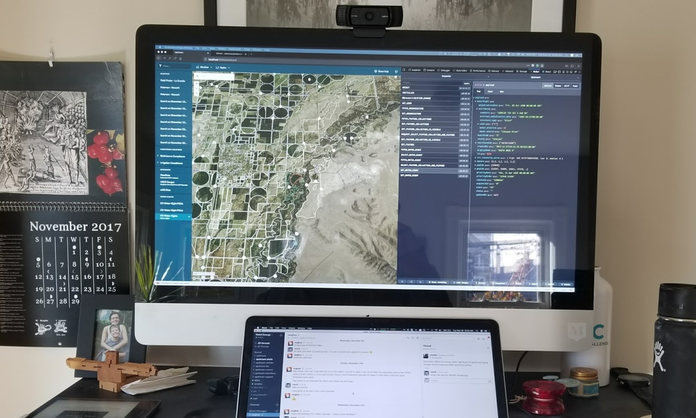
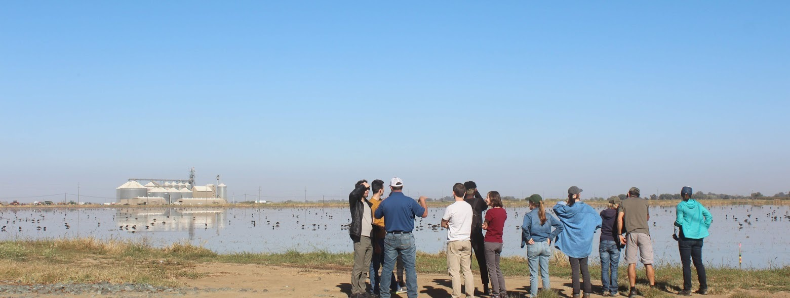
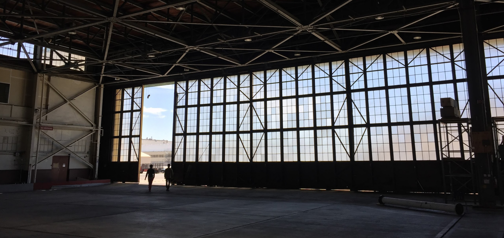

mrshll.com
Upstream Tech
[Upstream Tech] is a public benefit corporation founded in 2016 by Marshall and Alden. It currently provides two services:
- [Lens], monitoring software for environmental organizations.
- [HydroForecast], a hydrologic forecasting service used by renewable energy utilities and conservation organizations.
In it’s early days, we did a number of consulting projects, including two citizen science applications: the New York State’s Herp Shark Count for the Galapagos Islands. After attending a lecture by Dr. Grey Nearing, who later became an advisor and briefly our Director of Research, we honed in a satellites and machine learning as tools we could leverage given our previous experience and technical strengths.
The first non-consulting project was a remote compliance tool for water transfers in the Western U.S. In the West, water rights are purchased or leased by conservation organizations with the aim to transfer water from agriculture use to environmental use to increase flows in streams and rivers for the benefit of freshwater species. Our service allowed organizations to remotely monitor that this transfer indeed occurred and that the water was not used on the farm field - a monitoring process that would typically require costly in-person visits througout the season. These visits diverted resources that could otherwise be applied to additional conservation projects. A classifer was used to predict the liklihood that a field was irrigated or not. The bones of this application later became our data processing pipeline for satellite imagery and machine learning.

From there, we became fascinated with anachronous design and complexity of water rights. We built a system that digitized a number of states’ water rights, and used the same classifier as before to predict year-over-year water use. An aim was to build a database of water rights that on paper appeared low-value, but reliably applied water to their fields. Another was to identify farm fields that had not used water for a certain number of consecutive years, which would invalidate the claim - a radical and contentious application of technology which would have been dangerous to release without a fuller understanding of the politics and local contexts. Even with some of these databases built, we learned that water rights require handshakes and hat tips and we were trying to apply a scalable solution to a problem that wasn’t ready to “scale.” So we switched gears back to our compliance monitoring.
We met with The Nature Conservancy’s [Bird Returns] program via an introduction from our advisor Brian Richter, the then Director of International Water at The Nature Conservancy. The program applies management guidelines to rice fields in the Pacific Flyway, providing vital habitat for migratory birds in the Spring and Fall. After discussion with the team’s leads, Katie Andrews and Ethan Inlander, we determined that our previous compliance monitoring software could be used to monitor projects in the BirdReturns portfolio. We launched this program, and over time it evolved into what is now Lens.
 The team visited a project location in the Sacramento area
In parallel, we met Gia Schneider from Natel Energy via a meandering series of introductions. Natel Energy developes a hydropower turbine that uniquely allows for 100% safe fish passage. After breakfast together in Boston, we realized we were working on the same underlying problems from very different angles: Natel Energy via hardware and project development; Upstream Tech via software solutions - both with the aim at improving the health of watersheds and building climate resilience. After a few months of discussion and brainstorming, we decided to {join forces}. Learning about hydropower via Gia and the Natel team, we realized there was an opportunity to apply our machine learning and satellite technology to watershed management and planning, and more specifically starting with hydropower operations. This was the birth of our second product, HydroForecast.
 Natel’s hanger in Alameda, CA
During this time period, we were fortunate to be joined by many friends, past colleagues, and people we met along the way. The team is now over [20 people].